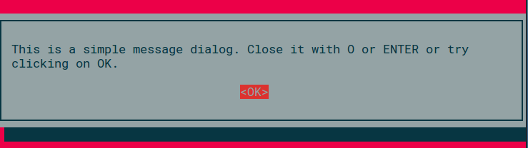

whiptail
This folder contains a library for yabasic that allows the use of the Linux command whiptail to display a variety of dialogs in text mode.
The library will test for the presence of the whiptail command and will exit gracefully if it is not present. Whiptail is a textmode application and must be run in a terminal. It will not be useful in a headless script.
The entire set of libraries focuses on sane defaults and getting basic functionality into yabasic. There are a lot of options that will not be implemented!
The images below are for illustration only. The exact appearance of the dialogs will depend on your system settings.
Developed on elementary OS 0.4 "Loki" (i.e. Linux), but it should work on any system that will run both yabasic and the whiptail command.
The library should exist either in the same folder as your program or in the standard yabasic library location on your system.
To use the library, use the command
import whiptaillib
You should not use this library and one of the others in this set that provides dialogs concurrently, because they replicate subroutine names. Pick the right one for your program and stick with it!
Routines available:
Common Routines
These routines are available on any of the four dialog-providing libraries.
ClearDlg() - on dialog and whiptail, this clears the dialog from your terminal. Same as the yabasic command CLEAR SCREEN, but may work better if you are expecting to issue another Linux command immediately.On zenity and kdialog, dummy routines are provided for compatibility so that you do not need to rewrite your code.
InputDlg$(text$, title$, ok$, cancel$) - Presents a one-line dialog into which the user can type a string answer.
- The value title$ is the title on top of the widget
- The value ok$ is the text of the accept button, normally OK.
- The value cancel$ is the text of the reject button, normally Cancel.
- The result is returned as a string value.

- MenuDlg(text$, title$, ok$, cancel$, menustring$) - Create a menu of options for the user to choose from
- The value title$ has no effect in whiptail, but is kept here for compatibility and must be supplied.
- The value ok$ is the text of the accept button, normally OK.
- The value cancel$ is the text of the reject button, normally Cancel.
- The value menustring$ is the list of menu options as a single string, separated by hash signs (#). Spaces are allowed.
- If the number of options exceed the available space in the widget, the list will be scrollable.
- The result is returned as a numeric value, starting from 1.
- If you prefer to get the same number in string format, you can use MenuDlg$(text$, title$, ok$, cancel$, menustring$)

- MessageDlg(text$, ok$) - Display a simple message with an OK button.
- The value ok$ is the text of the accept button, normally OK
- Returns nothing.

- PasswordDlg$(text$, title$, ok$, cancel$) - Same as InputDlg$ but with asterisks replacing the input text.
- The value text$ has no effect in whiptail, but is kept here for compatibility and must be supplied. This seems to be a bug in the current version of whiptail.
- The value ok$ is the text of the accept button, normally OK
- The value cancel$ is the text of the reject button, normally Cancel
- The result is returned as a string value.
- RadioDlg(text$, title$, ok$, cancel$, menustring$, selected$) - Create a menu of options for the user to choose from.
- Same as MenuDlg(), except that you can indicate which item in menustring$ is currently selected or active.
- The value title$ is the title on top of the widget
- The value ok$ is the text of the accept button, normally OK.
- The value cancel$ is the text of the reject button, normally Cancel.
- The value menustring$ is the list of menu options as a single string, separated by hash signs (#). Spaces are allowed.
- The value selected$ is the currently selected item and must correspond to one of the items in menustring$ - case sensitive!
- Just moving the cursor is not enough here - the value in the menu must be explicitly selected with SPACE.
- If the number of options exceed the available space in the widget, the list will be scrollable.
- The result is returned as a numeric value, starting from 1.
- If you prefer to get the same number in string format, you can use RadioDlg$(text$, title$, ok$, cancel$, menustring$, selected$)
- This routine does work in whiptail, but the graphical feedback is poor. This may be a bug in the current version of whiptail.
- EXAMPLE: a = RadioDlg("This is a menu", "A Menu!","Accept", "Deny", "Science#Religion#Magic#All of the above", "Magic"): print a
TestForDialogUtility$() - Routine to test if the called utility actually exists on the system. An empty string returned means it does, otherwise an error message is returned.
TextFileDlg(filename$, title$, exit$) - Displays a text file.
- The value title$ is the title on top of the widget
- The value exit$ is the title of the button. Normally OK.
- Text wrapping varies from one dialog-provider to the next. It is better if you preformat your text file.
- Returns nothing.
- YesNoDlg(text$,yes$, no$) - Displays a dialog with text (normally a question) and the options to reply yes or no.
- in dialog, the first CAPITAL letter of the yes$ and no$ variables will become the hotkeys for those buttons, so make sure they are different. This does not matter for the other dialog-providing utilities.
- Returns 1 for yes and 0 for no.
whiptail-specific routines
These routines will only work with whiptail.